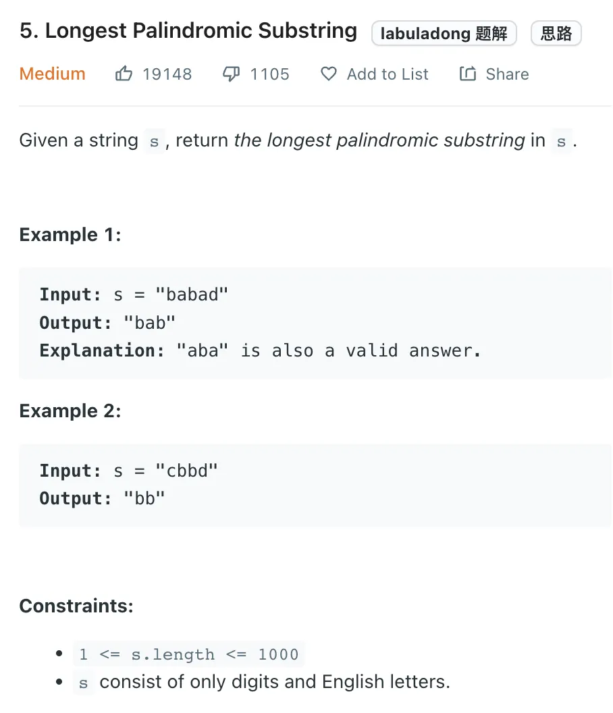

5. Longest Palindromic Substring
考過的公司：Amazon、Binance、Bytedance、Google、tiktok
Question

✍🏽 My Solution
Solution #1 [暴力解]
class Solution {
public String longestPalindrome(String s) {
int len = s.length();
int max = 0;
String ans = "";
for (int i = 0; i < len; i++) {
for (int j = i + 1; j <= len; j++) {
String tmp = s.substring(i, j);
if (isPalindromic(tmp) && tmp.length() > max) {
ans = tmp;
max = Math.max(max, ans.length());
}
}
}
return ans;
}
public boolean isPalindromic(String s) {
int len = s.length();
for (int i = 0; i < len / 2; i++) {
if (s.charAt(i) != s.charAt(len - i - 1)) {
return false;
}
}
return true;
}
}
Explanation (in my words)
- What is the space/time complexity of their solution?
- time: O(n^3)
- space: O(1)
Solution #2 [DP]
Explanation (in my words)
- How does their solution work?
- 狀態定義：一個二維DP數組代表index i 到 j 之間substring是否是一個回文
- 選擇：
Solution #3 [中心擴散法]
/* ans = "dbbd"
0 1 2 3 4 5 6 7
i
a c d b b d a a
i j
i = 0
j = 1
curLen = 1
maxLen = 4
maxStart = 1
2, 6
s.substring(maxStart + 1, maxStart + maxLen + 1);
*/
class Solution {
public String longestPalindrome(String s) {
if (s == null || s.length() == 0) {
return "";
}
int n = s.length();
int left = 0, right = 0;
int curLen = 1;
int maxLen = 0, maxStart = 0;
for (int i = 0; i < n; i++) {
left = i - 1;
right = i + 1;
while (left >= 0 && s.charAt(left) == s.charAt(i)) {
curLen++;
left--;
}
while (right < n && s.charAt(right) == s.charAt(i)) {
curLen++;
right++;
}
while (left >= 0 && right < n && s.charAt(right) == s.charAt(left)) {
curLen += 2;
left--;
right++;
}
if (curLen > maxLen) {
maxLen = curLen;
maxStart = left;
}
curLen = 1;
}
return s.substring(maxStart + 1, maxStart + maxLen + 1); // -1 + 3 + 1
}
}
Explanation (in my words)
- How does their solution work?
- What is the space/time complexity of their solution?
- time: O(n^2)
- space: O(1)